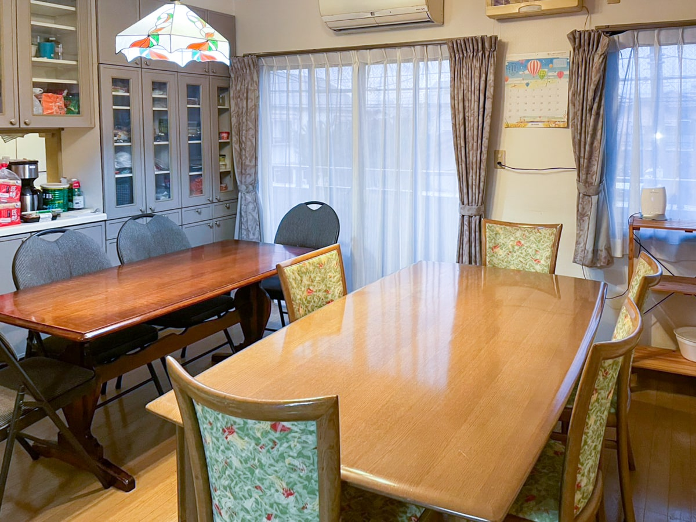

01
依存症者向け
住まい再建サービス
回復の途上にある方へ、利用できる制度も確認しながら安心して暮らせる住まいを確保し、生活再建の導線を整えます。
- 回復を支える安定した住環境
- 住居確保給付金等の活用可能性確認
- 生活困窮者自立支援制度との連携
- 再発防止と就労継続支援
- 3か月・6か月・1年・2年の面談
Services
住まいを失わせないことが、再出発の第一歩。Housing Firstに制度活用力を重ね、安心して暮らせる日常を取り戻します。
01
回復の途上にある方へ、利用できる制度も確認しながら安心して暮らせる住まいを確保し、生活再建の導線を整えます。
02
出所後の住まい不安を早期に解消し、制度と就労支援を接続して社会復帰を継続できる土台をつくります。
03
一般社団法人相模原ダルク利用者専用のナイトケアハウスを運営。夜間も孤立しない生活環境を提供します。
04
セクシュアリティやジェンダーに起因する住居不安・差別リスクに配慮し、安心して暮らせる住まいの確保と生活支援を行います。
05
安全確保を最優先に、緊急避難先の確保から生活再建までを一体で支えるシェルター運用と住居支援を行います。
06
言語・制度・文化差による住居課題に対応し、外国人労働者・外国人住民の方々が安心して生活できる住まいと実務支援を提供します。

NIGHT CARE HOUSE
相模原ダルクの公式サイトで紹介されているナイトケアハウスの共用室です。食事や会話を通じて、人とのつながりと生活のリズムを育む環境をご覧いただけます。
相模原ダルクの施設紹介を見る